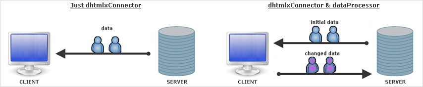

Client-side requirement - dataProcessor
Connector itself lets just pass data from server- to client-side.
When you need to pass data back (e.g. you've updated record and want to save updates in database) you should use dataProcessor additionally.

Shortly, data exchange with dataProcessor can be characterized as follows:
- After you make some changes client sends query to server. Query is passed with one of the following statuses:
- updated
- inserted
- deleted
- Server tries to implement the required query. If the operation was performed successfully, server returns the same status it got. Otherwise - status “error”.
- While exchanging, data is undergone default processing both on server- and client-side, i.e. data will be updated/inserted/deleted automatically (just initialize dataProcessor and dhtmlxConnector), no additional code needs to be added. You can affect on this default processing by means of events (see details below).
Files to include on client-side
To use functionality of dataProcessor you should add the only file - dataprocessor.js.
Initialization and linking to connector
To initialize dataProcessor you should write 2 commands:
var dp = new dataProcessor(url) dp.init("mygrid")
To link dataProcessor with connector you should specify connector file as a parameter of the constructor:
dp = new dataProcessor("myconnector.php"); dp.init("mygrid");
Client-side logging
Dataprocessor has its own client-side logger, which can be enabled by including one additional js file - dhtmlxdataprocessor_debug.js
Validation
client-side validation
Dataprocessor allows to validate data before sending to server-side (see details here).
server-side validation
Details of server-side validation also see in the related chapter of this documentation.
Changing default processing
As it was mentioned before, to affect on default data processing either on server- or client-side you should use events (they can be either dataProcessor or dhtmlxConnector events).
changing default data processing on server-side
To affect on server-side processing you should use one the following events of dhtmlxConnector:
changing default data processing on client-side
Changing on client-side can be done in one of the following ways:
- On server-side through handler functions of dhtmlxConnector events:
- On client-side through handler functions of dataProcessor events:
- On client-side through dataProcessor's method defineAction().
The method allows to define handler function of the specified status.
dp.defineAction("update",function(sid,response){ ... return true;// return false to cancel default data processing at all })
- meanwhile, you can change status of server-side response through dhtmlxConnector's method set_status() and assign the appropriate processing through defineAction().
Status can be changed in 2 ways:- by setting other predefined status ('updated', 'inserted', 'deleted'). In this case you just change default processing, write some additions to it.
- by setting custom status. In this case you cancel default processing at all and should define all actions on client-side by yourself.
$data->set_status("my_status");
For more details see chapter 'Custom status'